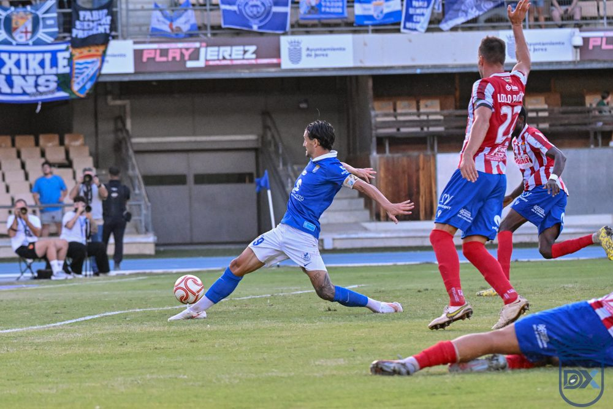

Xerez gave their explanation, Cádiz gave theirs and the Federation decided

Photo: Diario XerecistaI do not understand why a certain section of the Cádiz press is blaming Xerez for the match being played today.
From Monday, the Chapín pitch undergoes a reseeding that lasts 24 days, and the only date available was 25 November, which is when Cádiz wanted to play. That date was unacceptable for the Federation, since the draw is on 1 December and it wants all the matches to be finished so that they do not clash with the Champions League matches.
Xerez gave their explanation, Cádiz gave theirs and the Federation decided.
Do they really want to postpone the match because of what has happened, or are there other interests behind it?
🇪🇸 Leer en español ← Back to home